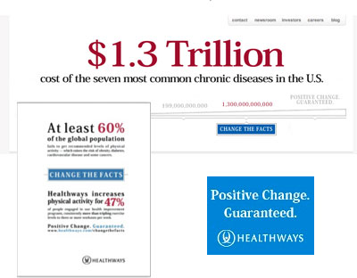
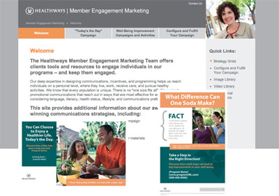

Portfolio
-
Bully Beat Down – Creating Awesome Upstanders
STRATEGY/SOCIAL MEDIA/WEB DEVELOPMENT
SITUATION: HealthTeacher had just finished developing a cool app to teach kids how to stand up to bullies. They also had the perfect opportunity to garner attention with Anti-Bullying Awareness Month. But they had to move fast to make it happen.
CHALLENGE: Effectively promote the AwesomeUpstander! app via social media to augment other marketing and public relations activities.
RESPONSE: GmG quickly developed a highly targeted strategy aimed at prominent mom bloggers and created a social campaign that launched just in time for Anti-Bullying Awareness Month. Creating a community hub and securing participation from more than a dozen national mom bloggers, our team exposed more than 150,000 moms to HealthTeacher’s anti-bullying app and educational materials during the month of October.
-
Collaborative Care – Packaging Services and Expertise
CONTENT DEVELOPMENT/STRATEGY/SALES SUPPORT/CUSTOMER ENGAGEMENT
SITUATION: In response to a rapidly changing landscape in accountable care, Premier, Inc. had developed an amazing portfolio of resources and consulting services that were available to members of its various collaboratives. Over time, the organization realized that its members were not fully aware of all it had to offer.
CHALLENGE: Expertly package and position Premier’s deep expertise and resources for helping hospitals and health systems prepare for accountable care.
RESPONSE: GmG worked closely with Premier’s internal communications team and subject matter experts to reshape its promotional collateral for its accountable care offerings. The new collateral is helping Premier representatives tell their story and effectively consult with their membership.
-
Pizza for a Purpose – Helping One Nonprofit Make Some Dough
STRATEGY/CUSTOMER LOYALTY/BRANDING
SITUATION: Against the Grain is a nonprofit that lives up to its name. When other charities were making a push for end of year donations in 2012, AtG was doing something a little different. Purchasing a pizza joint. The charity bought Brothers Pizza Co. to help augment their revenue sources and to provide job training for people who need help getting back on their feet.
CHALLENGE: Help AtG develop a strategic marketing plan to help them increase revenue of the restaurant by 20% in 2013.
RESPONSE: GmG has been working with Brothers to develop an integrated strategy that focuses heavily on customer loyalty, local partnerships and rebranding efforts. Among the activities planned for 2013 are a grand re-opening, an increased presence on social media, more systemic and consistent communications, diversification of revenue sources and enhancements to the overall customer experience.
-
Changing the Facts – Driving B2B Leads for Healthways
SALES SUPPORT/LEAD GENERATION/INTEGRATED CAMPAIGN
SITUATION: Healthways needed to fill its sales pipeline amidst a violently competitive marketplace. Standing out from the crowd was a problem, as was engaging potential customers who had grown skeptical of wellness vendors.
CHALLENGE: Launch an effective lead generation campaign that would drive significant activity in the sales pipeline, translating in new revenue.
RESPONSE: While other firms were using vivid lifestyle imagery and flowery, aspirational language, our Change the Facts campaign delivered a bare bones approach that cut to the chase. The health statistics were scary. Healthways could change them. And we had hard proof. Change the Facts funneled more than $35 million of prospective revenue into the pipeline and helped convert $10 million into won revenue.
-
A New Start for a Start Up - Privia's Brand Makeover
BRANDING/IDENTITY/STRATEGY/WEBSITE
SITUATION: Privia was bracing for rapid growth but was being challenged by messaging that didn’t fully articulate the innovation and value of its products.
CHALLENGE: To develop a new messaging platform that clearly articulated the Privia value proposition to a range of audiences (physicians, patients, investors, partners) and refresh the company’s main branding vehicles, including corporate website, consumer-facing materials, video assets and sales collateral.
RESPONSE: Strategic messaging workshops, consumer and physician feedback and competitive audits helped us form a clear and compelling messaging platform. We fully executed a suite of new creative assets that have been effective in repositioning the company for growth. For a sample of the new messaging and visuals, please visit http://www.priviahealth.com.
-
Today's the Day – Driving Participation in Health + Wellness
CONSUMER MARKETING/WELLNESS ENGAGEMENT
SITUATION: A series of acquisitions left Healthways with a disjointed and unorganized approach to offering clients marketing solutions to drive participation in the company’s wellness programs.
CHALLENGE: Establish marketing engagement team to consult with clients, build effective marketing strategies and develop integrated marketing campaign to drive participation.
RESPONSE: Formed team, oversaw creation of unified marketing campaign covering all Healthways programs, developed communications consulting and account management best practices. Served 150 Healthways clients in first year of operation. Survey responses and statistics demonstrated engagement levels more than doubled when engagement team was active with accounts. Campaigns have won multiple industry awards for innovation and effectiveness.
-
The Benefits of Membership – A Doctor-Driven Wellness Program
STRATEGIC PLANNING/ANALYSIS/MARKET RESEARCH
SITUATION: Privia Health wanted to more effectively and efficiently drive membership in its wellness and prevention programs, which are made available through partnerships with primary care physicians.
CHALLENGE: Conduct a full analysis of current Privia membership and develop a strategic plan to address opportunities.
RESPONSE: Conducted full analysis of membership lifecycle. Completed in-depth review of process for program introduction, led segmentation project to better understand key demographic/psychographic characteristics of members and uncovered drivers for buying decisions and emotional barriers to membership.
Analysis resulted in a streamlined program launch process, targeted messaging based on segmentation/barriers and the introduction of multiple new programs and tactics that were piloted to drive additional membership.
-
A Sleek, Online Upgrade for a Sharp Market Insights Firm
WEBSITE DESIGN/DEVELOPMENT
SITUATION: Optimization Group, an award-winning, world renowned marketing insights firm, had outgrown its corporate website.
CHALLENGE: Design and implement a web prescence that more effectively represents the OG brand and the smart, sophisticated approach the firm takes with clients.
RESPONSE: GmG worked closely with OG’s internal team to design and deliver a fresh new site that punched up the OG brand, while showcasing the firm’s expertise and experience.
Have a look at optimizationgroup.com.